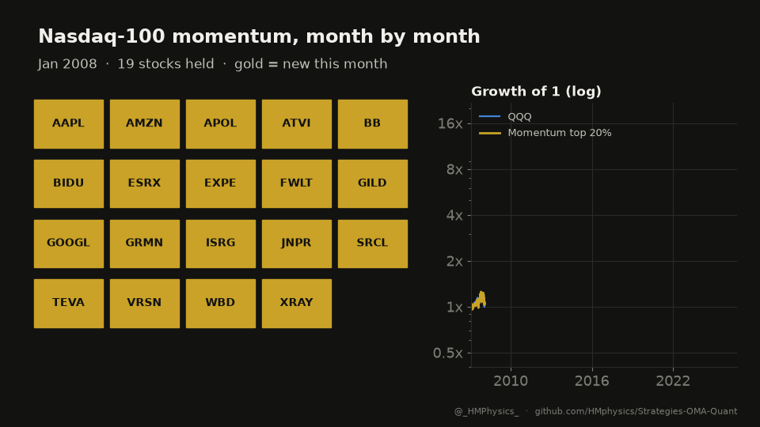
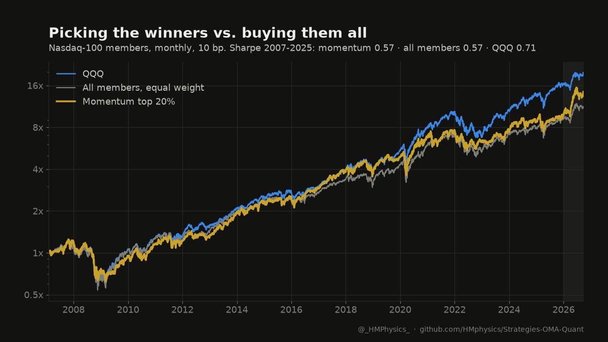
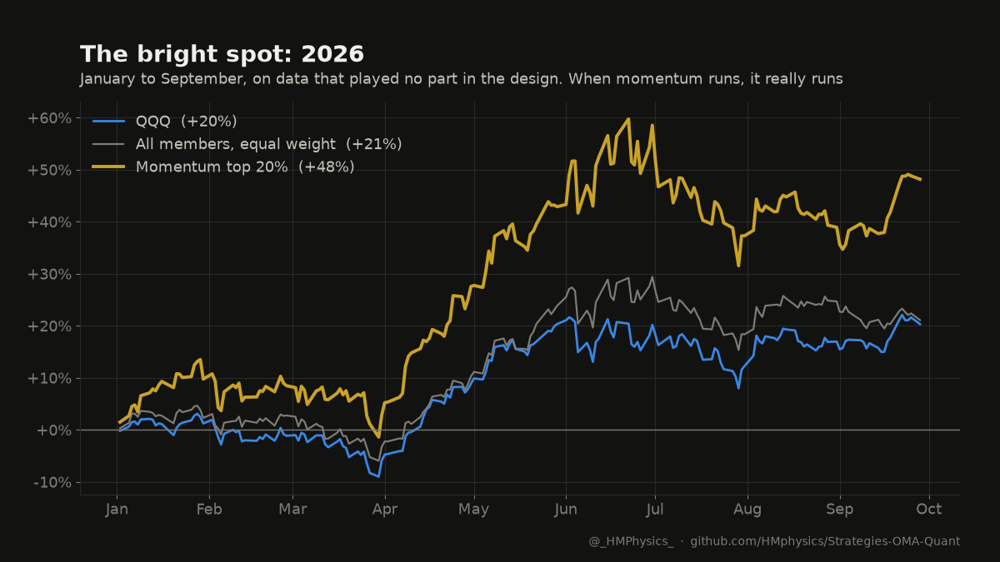
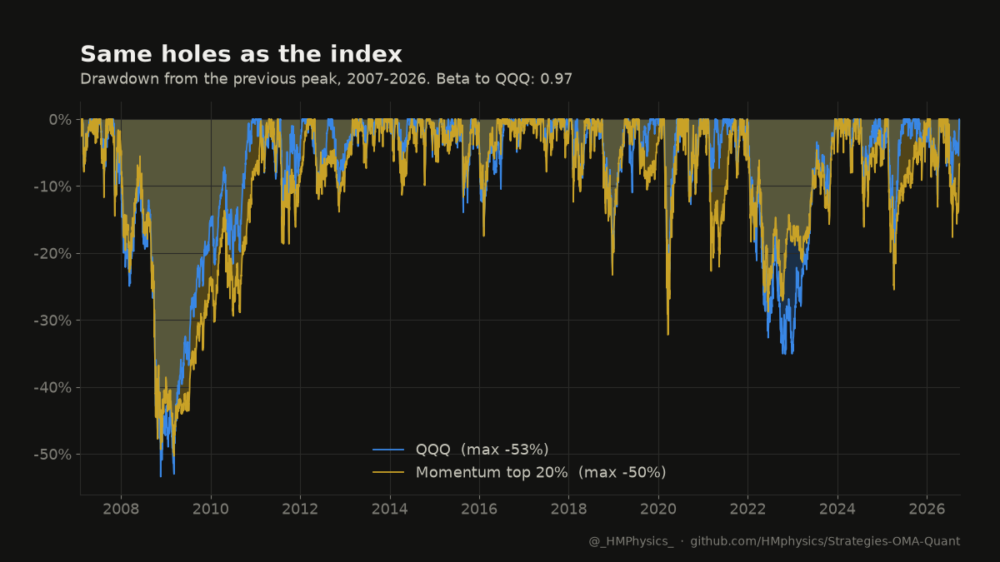
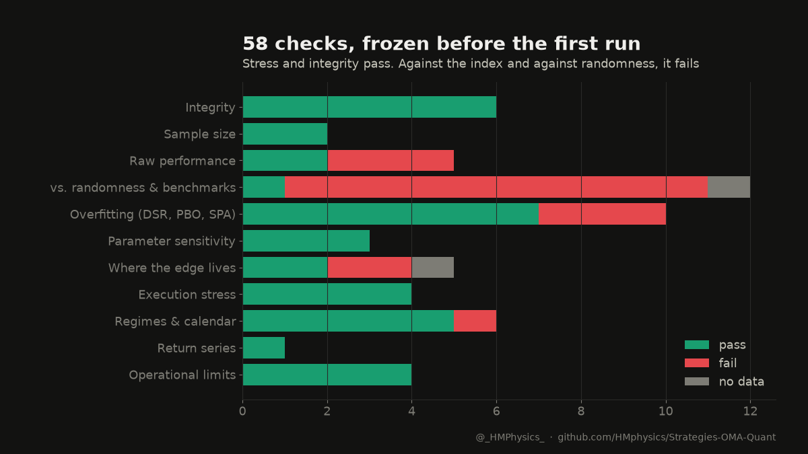
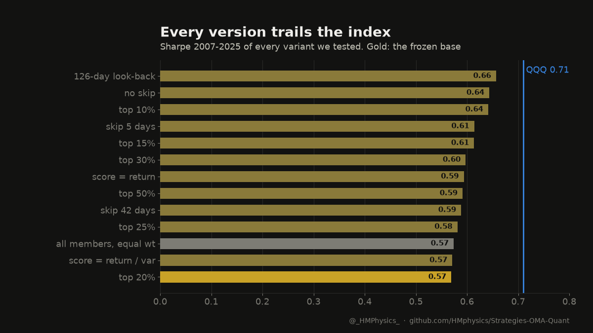
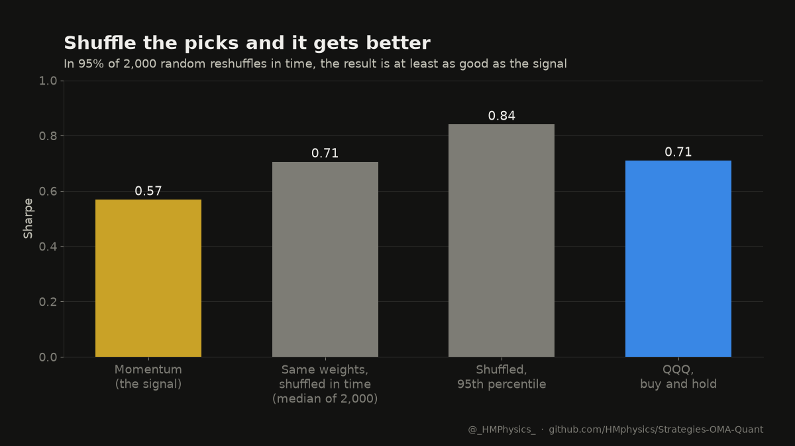

216 Quant Books · Episode 3 · Book 1 · Strategy 3 of the series
The quintile portfolio from Daniel P. Palomar's Portfolio Optimization: Theory and Application (Cambridge, 2025). Buy last year's winners every month, and find out what you were really buying.
Sample 1 February 2007 to 31 December 2025, Nasdaq-100 members by year, monthly rebalance, long only, 10 bp per side. Same engine and costs for every line.
How it plays
Momentum is one of the most documented effects in finance: stocks that did well over the last year tend to keep doing well for a few more months. The book's quintile portfolio is the plainest way to trade it.
At the end of every month the strategy takes the stocks that were in the Nasdaq-100 that year, scores each one by its average daily return over the last twelve months divided by its volatility, skipping the most recent month, and buys the top 20% at equal weight. About twenty stocks, about a quarter of them replaced every month.


The record
| Portfolio | Sharpe | CAGR | Vol | Max DD | 2026 Sharpe | 2026 Max DD |
|---|---|---|---|---|---|---|
| Momentum, top 20% | 0.57 | 12.8% | 23.5% | −50.3% | 1.71 | −17.6% |
| All members, equal weight | 0.57 | 12.4% | 22.3% | −55.2% | 1.17 | −10.9% |
| QQQ, buy and hold | 0.71 | 15.9% | 22.3% | −53.4% | 1.16 | −11.7% |
2007–2025 sample unless marked. 2026 runs from January to 28 September, the last date with prices for every member. Sharpe is over the T-bill rate.
Nearly 13% a year for 19 years, positive in 17 of them, and a spectacular 2026 on data nobody looked at while designing it. Taken alone, it looks like a strategy worth running. Next to the index it was drawn from, it doesn't.


What the engine checked
YGGDRASIL is the audit engine behind this series. The rules and the pass thresholds were written down and sealed before a single backtest ran. This strategy is a textbook case of why the benchmark matters as much as the curve.



The verdict
Momentum is real in the academic data, and 2026 shows how good it can feel: in a year like this it more than doubles the index, which is why it stays on our watch list. But in a universe like the Nasdaq-100, picking last year's winners adds nothing over buying every member, and both trail a plain QQQ.
The high deflated Sharpe was measuring the market, not the signal. That's the lesson of this episode: always ask what your strategy beats once you take the market out. As a strategy, we don't like it. YGGDRASIL doesn't accept it, and we agree.